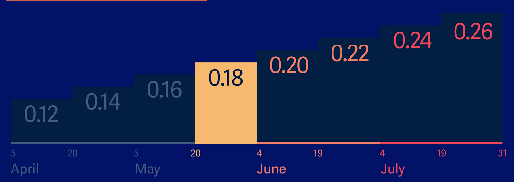
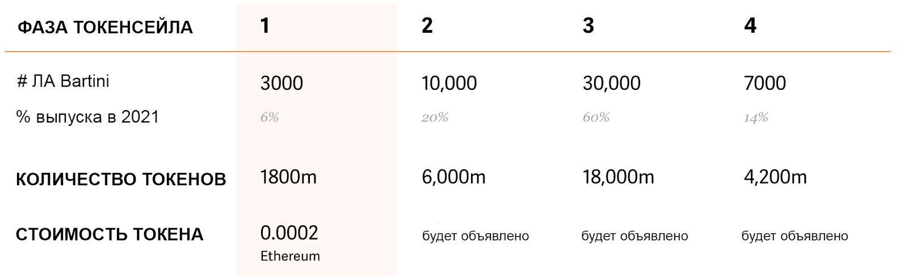
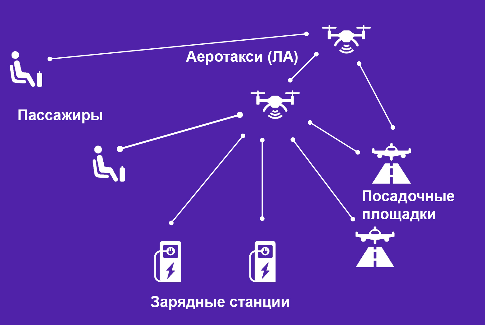
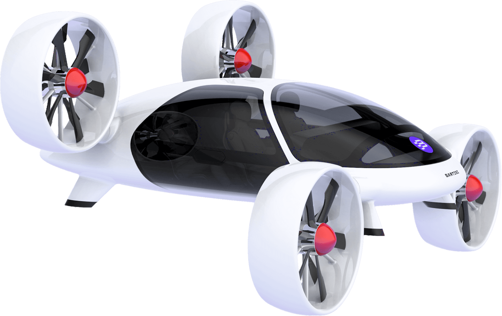

McFly — проект, намеренный создать инфраструктуру городского аэротакси с использованием технологии блокчейн.
Основная цель проекта — внедрить в городах использование аэротакси на массовой основе. Чтобы контролировать износ летательных аппаратов (ЛА) или, как их называют в проектной документации, летающих автомобилей, по достижению указанного предельного полетного времени ЛА будет гарантированно прекращать работу. За обеспечение гарантий будет отвечать технология блокчейн: один нативный токен проекта McFly равен одной минуте полета. В рамках срока эксплуатации ЛА может принять фиксированное количество токенов, после чего заканчивает работу. Все перемещения токенов фиксируются в блокчейне.
Услуги аэротакси будут выполняться летательными аппаратами вертикального взлета и посадки (VTOL — Vertical Takeoff and Landing Procedures).
Команда намерена не просто обеспечить предоставление услуг аэротакси, но и сформировать комплексную инфраструктуру, включающую станции подзарядки, посадочные площадки и др. Помимо оплаты полетов, токены проекта будут использоваться для поощрения других сервисов и участников инфраструктуры.
В проекте задействованы компании, участвующие в технологическом консорциуме blockchain.aero. Консорциум состоит из компаний, производящих устройства и их компоненты, которые согласились получать вознаграждение за деятельность в токенах McFly.
McFly.Aero представляет собой технологический и бизнес инкубатор для рынка городского аэротакси: услуги, бизнесы, операторы, решения. McFly.aero намерен интегрировать проекты участников технологического консорциума в единую среду для управления системой городского аэротакси и маркетплейса.
Первым VTOL ЛА, который будет использоваться в проекте будет аппарат Bartini. Bartini — беспилотный ЛА вертикального взлета, разработанным российским стартапом, резидентом Сколково. Команда называет Bartini летающим автомобилем.
Механизмы и принципы эмиссии
Нативный токен проекта — McFly.
В ходе первой фазы токенсейла будет распределено 1,8 млрд. токенов. 1 токен McFly = 1 минуте полета на аэротакси.
Продажа токенов началась летом 2017 года, фазы многократно менялись.
C 5 апреля началась первая фаза основного токенсейла, продажи сделанные до этого момента принято относить к пресейлу.
Цена в ETH на токены McFly с 5 апреля 2018 по 31 июля 2018 варьируется следующим образом:
1,8 млрд. токенов соответствуют выпуску 3’000 ЛА Bartini, которые составляют 6% от планируемого массового выпуска ЛА в первый год работы проекта.
Остальные 47’000 ЛА Bartini будут токенизированы в соответствии с результатами выпуска аппаратов. Летательные аппараты других компаний могут быть токенизированы по мере их присоединения к платформе McFly.Aero.
Ресурс полета аппарата Bartini в токенах выглядит следующим образом:
700’000 токенов/минут для 4-х местного аппарата Bartini.
500’000 токенов/минут для 2-х местного аппарата Bartini.
Таким образом:
6% токенов распределяется в первую фазу токенсейла: токенизация полетных ресурсов 3’000 аппаратов Bartini.
94% токенов будут распределены позже по мере токенизации полетных ресурсов 47’000 аппаратов Bartini, которые должны быть выпущены по плану.
другие производители ЛА могут запускать дополнительные программы токенизации.
По плану, представленному на официальном сайте, по ⅓ аппаратов Bartini будет создано в первый, второй и третий год массового запуска производства.
План по распределению в ходе фаз токенсейла на данный момент выглядит так:
Информация по датам проведения и стоимости токенов для фаз 2 - 4 отсутствует.
Распределение токенов:
55% продажа во время токенсейла.
15% продажа во время токенсейла крупным инвесторам.
10% команде, активным компаниям-участникам инкубатора McFly.Aero.
9% резерв.
5% советникам.
5% bounty-программы: 2% онлайн активность, 3% оффлайн мероприятия.
1% airdrop.
Целевое распределение токенов команды-инкубатора:
30% разработка, производство и интеграция ЛА.
13% развитие городской инфраструктуры.
10% разработка блокчейна и программного обеспечения.
10% операционные расходы и администрирование.
9% маркетинг и работа с общественностью.
8% управление сообществами.
6% взаимодействие с органами государственной власти, сертификация и т.п.
5% научные исследования.
5% для непредвиденных обстоятельств.
4% юридическое обеспечение.
Общее количество токенов McFly всегда будет коррелироваться с общим полетным ресурсом (Total Flight). К общему полетному ресурсу может относиться как и количество полетных часов ЛА уже функционирующих в системе, так и планируемых к подключению.
Когда ресурс ЛА израсходован, он отключается от системы, а токены перечисляются поставщику нового ЛА: производителю или владельцу. Независимый технический специалист должен становиться “верификатором” такого перевода средств, проверяя техническое состояние нового ЛА. Подробности реализации пока не представлены.
Неясно будут ли механизмы сжигания токенов. Куда будут перечисляться средства в случае завершения сроков эксплуатации нескольких ЛА и отсутствии новых ЛА, готовящихся к присоединению к системе. Механизм баланса токенов и общего полетного ресурса недостаточно прозрачен.
Информация от команды по текущему объему собранных средств не представлена.
Эмиссия токенов
В предположении роста инфраструктуры McFly, команда представила видение протокола генерации новых токенов и стимулирования развития экосистемы. Протокол должен поддерживать баланс между токенами и полётным ресурсом.
Каждый полет и каждая транзакция в кошельке должна генерировать новые токены в рамках алгоритма консенсуса Proof-of-Flight (см. следующий раздел “Механизмы обеспечения консенсуса”). Активность генерации новых токенов будет регулироваться активностью полета, корректироваться с учетом востребованности в разных географических зонах, износа транспортных средств и т. п.
На практике параметры механизма дополнительной эмиссии неясны: кроме общих слов не представлено никаких формул, результатов статистического моделирования и т. п.
Таким образом, возникает много вопросов, связанных с корреляцией количества генерируемых токенов, спроса и предложения. Будет ли механизм генерации адекватно соотноситься с потребностью в новых аэротакси? Допустим, инфраструктура стремительно развивается, увеличивается спрос на полеты, а скорость генерации не позволяет ввести новые транспортные средства в систему. Исходя из подобной логики, возникают вопросы, связанные с механизмами поддержания стоимости. Например, если взаимосвязь 1 токен McFly = 1 минуте полета будет сохраняться, то реальные пользователи не будут заинтересованы в росте стоимости.
Стандарт токена
Первоначально выпуск токенов осуществлялся на базе платформы Waves. Затем были выпущены обновленные токены на базе Ethereum (ERC20). Выпуск токенов на Waves был осуществлен в июле 2017 года, а на Ethereum в ноябре 2017. Затем перед началом первой фазы токенсейла весной 2018 снова состоялся перевыпуск токенов вновь на Ethereum.
В дальнейшем команда планирует выпуск токенов и на других площадках, на официальном сайте упоминаются Universa и Emercoin. Реализована возможность обмена токенов McFly одного стандарта на другой в соотношении 1:1. Для свопа токенов Waves на токены стандарта Ethereum опубликована инструкция.
Команда выпустила достаточное количество токенов на Ethereum, чтобы владельцы токенов McFly платформы Waves могли их обменять на токены ERC20. По словам команды, двойного учета токенов не будет: при замене токенов, выпущенных на Waves, на обновленные токены стандарта ERC20, первые будут уничтожаться.
Механизмы обеспечения консенсуса
Четкий план технической реализации проекта отсутствует.
Исходя из документации, проект планирует использовать механизм обеспечения консенсуса Proof-of-Flight (PoF): “Создатель следующего блока выбирается с помощью консенсусной функции от хэш-подписей всех кошельков устройств и людей, которые принимали участие и подписали фактический акт полета: пассажиры, пилоты, транспортные средства, посадочные площадки, зарядные станции, диспетчеры, системы управления воздушным движением, обслуживающий персонал”.
Исходя из участия в инкубаторе McFly.Aero двух компаний блокчейн-разработчиков — Universa и Emercoin — можно предположить, что компания будет использовать их технологии и наработки в будущей системе.
В блокчейне Emercoin используется гибридный механизм PoS+PoW. В Universa подтверждение выполняется авторизированными узлами Universa.
Ранее появлялась информация о планах использования блокчейна Universa в качестве базовой технологии, но подтверждение этого факта в документации отсутствует. Таким образом, до конца неясно, будет ли компания создавать свой блокчейн или использовать какую-то стороннюю базовую технологию. В начале мая 2018 года CEO Universa опубликовал пост о своем выступлении на конференции, где рассказывал про McFly. В официальном Telegram-канале представитель McFly прокомментировал это выступление, сказав, что Universa один из участников консорциума, занимающихся разработкой блокчейн протокола для проекта McFly.
Механизм обеспечения консенсуса существенно влияет на ключевые параметры производительности и масштабируемости системы, поэтому странно, что точная информация о базовой технологии отсутствует.
Архитектура
С точки зрения концепции, McFly планирует создать маркетплейс для услуг аэротакси, в котором пассажиры, владельцы транспортных средств (ЛА), представители прочих услуг — зарядные станции, посадочные площадки и т. д., будут взаимодействовать с использованием блокчейна.
Помимо блокчейна, концепция затрагивает популярное направление — Интернет Вещей (Internet of Things IoT): устройства в инфраструктуре будут взаимодействовать друг с другом как отдельные единицы.
Все процессы взаимодействия будут фиксироваться в блокчейне, включая заказ полета и подтверждение от представителей наземных служб и систем управления воздушным движением о предоставлении маршрута и т. п.
Взаимодействие участников системы
Пассажир.
Заказ и оплата аэротакси в токенах McFly, возможность оставить отзыв. Стоимость формируется по открытому алгоритму, учитывающему стоимость заряда батареи, стоимость посадочных площадок, страховки, контроля воздушного трафика, пилотирования и т.п. Пилотирование может проводиться в полностью или частично автономном режиме. ЛА может детектировать нанесение урона пассажиром и выписывать счет на его покрытие на базе смарт-контрактов.
Поставщики инфраструктуры.
Заинтересованные стороны могут создать свой бизнес и обеспечить его взаимодействие с инфраструктурой McFly.aero, например, оборудовать посадочные площадки и зарядные станции и предоставлять услуги по их использованию.
Управляющий городом (city manager).
Для расширения географии проекта управляющий городом должен предоставлять местным предпринимателям регуляторно-нормативные руководства по использованию воздушного пространства и управление воздушным движением, сертификации новых типов воздушных судов, землепользованию, архитектурным решениям для посадочных площадок.
Посадочная площадка, зарядное устройство и другие устройства и услуги.
Устройства, как правило, будут иметь два кошелька: операционный и ресурсный. На операционный будут перечисляться токены McFly за обслуживание, а на ресурсный будет переводиться количество токенов, отображающее износ устройства.
Транспортное средство.
В момент посадки ЛА покрывает все расходы на его обслуживание. Ресурсный кошелек ЛА отображает, сколько полетов совершил аппарат. Емкость ресурсного кошелька — показатель срока службы.
Производители и владельцы транспортных средств.
Добавляют новые устройства в сеть и следят за параметрами их использования, благодаря технологии блокчейн; получают вознаграждение.
Лицензирование и юридические аспекты
Токен McFly используется для получения услуг в рамках закрытой инфраструктуры, поэтому носит преимущественно характер utility-токена и маловероятно, что может быть признан ценной бумагами в соответствии с тестом Хоуи.
Однако, детализация технической составляющей и бизнес процессов проекта пока невелика, поэтому стоит следить за обновлениями документации и концепции, проверяя сохранность данного аспекта.
С учетом отсутствия в мире опыта масштабного внедрения услуг аэротакси и, соответственно, проработанных регуляторных норм, неясна активность работы проекта в этом направлении и наличие сотрудничества с юридическими фирмами, правительственными органами. На данном этапе существуют только небольшой опыт использования вертолетов в люксовых сервисах такси.
Отдельным риском является тот факт, что планируется использование ЛА инновационной конструкции, в том числе беспилотных, не апробированных в должной степени. Возникновение прецедентов с летальным исходом или с сильными повреждениями может наложить ограничения на границы внедрения подобной инфраструктуры. Статистика полетов БПЛА или исследования безопасности командой не представлены.
1. Оценка «Архитектура и логика»: 2 балла из 10. Прогноз негативный. Механизм и принципы эмиссии – 1 балл из 3 (нет четкого представления о механизмах генерации токенов. Неясно, как будет достигаться баланс между генерацией токенов и потребностью рынка в расширении системы. Механизмы поддержания стоимости токена тоже неясны). Блокчейн (архитектура и механизм обеспечения консенсуса) – 1 балл из 4 (отсутствует информация о будущей архитектуре системы, что не дает возможности сделать оценку). Лицензирование и юридические аспекты – 0 баллов из 3 (несмотря на utility-характер нативного токена, который снижает риски со стороны финансовых регуляторов, проект развивается в исключительно высокорисковой сфере городского воздушного транспорта. Команда не демонстрирует активность работы по обеспечению юридических составляющих проекта, например, регулированию полетов, сертификации ЛА, безопасности беспилотных пассажирских перевозок). Прогноз – негативный. Токенсейл проекта будет осуществляться в течение длительного срока, точные его даты пока неизвестны. Отсутствие точной технической информации об архитектуре проекта, планируемой базовой технологии. Механизмы адаптации всех параметров, связанных с токенизацией полетов и генерацией новых токенов должны быть очень грамотно продуманы для правильной работы экономики проекта. Стоит следить за обновлениями, касающимися технической составляющей проекта и работы команды в сфере обеспечения юридической составляющей.
Производительность и масштабируемость
Так как отсутствует информация о базовом блокчейне, нет возможности оценить параметры производительности и масштабируемости.
В White Paper команда упоминает разные подходы к хранению данных в блокчейне: хранение хэшей данных и основного содержимого на сторонних носителях и хранение всей информации, склоняясь ко второму подходу, который не предполагает использование внешних составляющих.
Также в документации приводятся оценки Uber по необходимой производительности: до 1000 транзакций в минуту для одного города в инфраструктуре и, соответственно, до 1 млн. для сети в 1000 городов. В качестве примера технологий, способных обеспечить такую производительность приводятся Universa и BitShares.
Встроенные механизмы и функции
Детальный план по технической реализации блокчейн платформы отсутствует. Основными функциями в системе является взаимодействие между участниками с использованием токенов McFly. Токены McFly будут использоваться для оплаты аэротакси и в качестве поощрений в системе.
Мониторинг ресурса ЛА
Для каждого летательного аппарата в сети, функционирующего в качестве аэротакси, будет рассчитываться полетный ресурс: количество полетного времени в рамках срока эксплуатации. Токен McFly представляет 1 минуту полета, при оплате аэротакси пассажир отправляет транспортному средству необходимое количество токенов за полет, это фиксируется в блокчейне. По мере выполнения полетов наполняется ресурсный кошелек, и по достижению максимума транспортное средство перестает работу в сети. Подобная схема призвана повысить параметры безопасности полетов и стать прозрачным инструментом мониторинга износа.
Децентрализованное голосование
Когда в системе сгенерировано количество токенов, которого хватает для добавления нового ЛА в систему, будет проводиться децентрализованное голосование с целью определения географического местоположения его доставки. При голосовании будут учитываться следующие параметры:
Токены на ресурсных кошельках ЛА, чтобы новое дополнительное транспортное средство добавлялось в зоны с более изношенными ЛА в системе.
Оборот на текущих кошельках, чтобы новое транспортное средство доставлялось в города, где нехватка транспортных средств делает полеты более дорогими и сеть загруженной.
Токены на пассажирских кошельках, чтобы новое транспортное средство доставлялось в города с более высоким спросом.
Идея использовать голосование для более грамотного распределения ресурсов инфраструктуры интересна, но в связи с отсутствием деталей концепции могут возникнуть вопросы. Например, кем будет приниматься решение о расширении инфраструктуры на другие регионы, где еще не представлены услуги аэротакси McFly.
Bartini
Первым летательным аппаратом или, как его называют разработчики, летающим автомобилем, подключенным к инфраструктуре городского аэротакси McFly.Aero, будет аппарат Bartini. Судя по информации и даже дизайну сайтов Bartini и McFly, эти два проекта развиваются совместно общей командой.
Транспортное средство Bartini является беспилотным летательным аппаратом вертикального взлета и посадки с возможностью ручного управления. Он представлен в двух пассажирских модификациях: для 2 или 4 пассажиров и в грузовой с грузоподъемностью до 400 кг.
Bartini является аппаратом мультироторного типа и наиболее близко соответствует квадрокоптеру Х-образнои схемы. Дальность полета порядка 150 километров. Ожидаемая стоимость будет около $100 тыс.
Виртуальная модель аппарата была представлена в июле 2017 года на Международном Авиакосмическом Салоне. По словам представителей компании, у них есть прототип размером 0,5 метра. Он был разработан с целью демонстрации снижения электропотребления в режиме горизонтального полета. По плану первый полноразмерный автомобиль будет собран к III кварталу 2018 года.
Единственная возможность следить за ходом разработки — соцсети: например, несколько фотографий частей будущего ЛА в инстаграм, видео на Youtube, записи на Facebook. 3 мая 2018 года в Twitter появилась запись о том, что все детали прототипа Bartini сконструированы и осталось ждать финальной сборки летающего автомобиля. Таким образом, есть шанс, что в скором времени команда продемонстрирует аппарат, что может значительно изменить уровень восприятия проекта.
В консорциуме blockchain.aero состоят еще две компании-разработчика летательных аппаратов для персональных полетов: Hepard и I’M AERO. Подробные планы по взаимодействию между компаниями пока отсутствуют, но в White Paper упоминается Hepard как возможное транспортное средство в проекте McFly. А на странице Facebook команда представляла видео тестирования частей аппарата Hepard.
Смарт-контракты для взаиморасчетов
Типичный счет за услуги аэротакси будет состоять из большого количества составляющих:
эксплуатация летающего автомобиля (оплата непосредственно на кошелек автомобиля);
оплата электричества (оплата поставщику электричества);
использование зарядной станции (оплата владельцу станции);
использование посадочных площадок (оплата владельцу площадки);
страхование полета (оплата поставщику страховых услуг);
покупка еды на борту и т. п.
Все финансовые взаимодействия будут регулироваться соответствующим смарт-контрактом, обеспечивая гарантию выплат.
Базовое ПО пользователя
На данный момент у проекта отсутствуют какие-либо публичные блокчейн-разработки.
За последний год на гитхабе проекта было всего 6 коммитов, связанных с выпуском токенов в ходе токенсейла. В блоге представлены подробные результаты внутреннего аудита смарт-контракта и положительные результаты стороннего аудита, но не уточняется, кем он был выполнен.
Для хранения токенов McFly можно использовать кошельки Ethereum, например, MyEtherWallet и кошелек Waves для хранения первой версии токенов, выпущенных на базе этой платформы. На официальном сайте представлена инструкция по добавлению токенов в кошелек MyEtherWallet и расширение MetaMask.
Возможности интеграции
Основой для легкой интеграции текущего токена является его стандарт ERC20, который делает его совместимым с децентрализованными приложениями на Ethereum. Также процесс листинга токенов на новых площадках упрощается, так как большинство поддерживают стандарты Ethereum.
Планы по технической разработке инфраструктуры отсутствуют, поэтому сложно оценить перспективы интеграции с другими проектами. Разве что в Road Map (см. раздел “Анализ Road Map и White Paper”) упоминается разработка API.
С точки зрения интеграции других проектов-разработчиков ЛА для аэротакси, предполагается, что участники консорциума согласны принимать токены McFly в качестве оплаты услуг и готовы в перспективе становиться участниками инфраструктуры.
2. Оценка «Функционал и программная платформа»: 4 балла из 10. Прогноз нейтральный.
Производительность и масштабируемость – 0 баллов из 2 (отсутствие точной информации о базовой технологии и ее параметрах).
Встроенные механизмы и функции – 2 балла из 3 (присутствуют удобные механизмы связанные с полетным ресурсом, голосованием и смарт-контрактами. Однако, необходимо большее количество деталей о будущих возможностях инфраструктуры).
Продукт – 2 балла из 4 (близость команды к сборке прототипа Bartini).
Возможности интеграции – 0 баллов из 1 (отсутствие четкой стратегии технической реализации не дает возможность оценить возможности интеграции).
Прогноз – нейтральный. Невозможно сделать прогноз, так как пока теоретическая составляющая превосходит практическую. Общая концепция работы системы может стать востребованной, но для создания инфраструктуры нужно преодолеть ряд глобальных проблем. Успешная сборка и тестирование прототипа Bartini может изменить прогноз.
Анализ Road Map и White Paper
White Paper проекта достаточно объемная, но при этом она описывает общую концепцию проекта, не уделяя внимание техническим деталям, как будущей блокчейн-системы, так и ходу разработки летающих автомобилей.
Даже после многократного прочтения непросто “ориентироваться” в тексте, так как, несмотря на многоступенчатую структуру документа, смысловая четкость и наполненность содержания неоднозначна.
Документ рассказывает об актуальной ситуации на рынке аэротакси и общем видении будущей инфраструктуры.
Также в White Paper приведена Road Map, охватывающая основные этапы до 2020 года:
2017 — запуск.
Токенизация запланированных 3’000 аппаратов Bartini. Создана межотраслевая рабочая группа по бизнес- и технологическим требованиям для блокчейна McFly.Aero. Появление первых предпринимателей-поставщиков услуг для инфраструктуры.
2018 — первые полеты.
Появление альфа-версии блокчейна. Появление уровня приложений и API, тестирование первых мобильных приложений. Проведение тестовых полетов двухместных аппаратов Bartini и других ЛА, запись в блокчейн информации по первым полетам. Дополнительные 10’000 аппаратов Bartini могут быть токенизированы.
2019 — начало производства.
Ключевые города инфраструктуры определены. Начало строительства объектов для массового производства аппаратов Bartini, которое способно создать 50’000 аппаратов с 2021 по 2022 г. Четырехместные аппараты Bartini и другие ЛА готовы для проведения тестовых полетов. Дополнительные 30’000 Bartini могут быть токенизированы.
2020 — первое внедрение. Пока Uber начинает полеты в Далласе, Абу-Даби и Дубае, консорциум запускает полеты в первых городах-членах сообщества. Все полеты эксплуатируются с помощью блокчейна. Дополнительные 7’000 Bartini могут быть токенизированы.
Ограниченное внедрение и тестирование системы с использованием нескольких посадочных площадок, зарядных станций и ЛА может состояться ранее, чем в 2020 году.
В блоге проекта в основном содержатся посты “общего содержания”. В социальных сетях можно найти фотографии процесса разработки аппарата Bartini.
4. Оценка «Анализ Road Map и White Paper»: 6 баллов из 10. Прогноз нейтральный.
White Paper – 3 балла из 5 (отсутствие необходимой информации о технической составляющей проекта, как в сфере разработки блокчейна, так и в сфере разработки аппарата Bartini).
Road Map – 3 балла из 5 (недостаточная детализированность Road Map, отсутствие инструментов мониторинга).
Прогноз – нейтральный. В документации неплохо изложена общая концепция проекта, однако пока нет полной уверенности, что актуальное состояние разработки коррелируется с указанными в Road Map датами. Вызывает удивление, что последняя версия White Paper относится к апрелю 2018, в 2018 должна быть представлена альфа-версия блокчейна, а никаких технических характеристик в документе нет.
Анализ команды проекта и аффилированных лиц
Команда
Команду проекта McFly.Aero можно разделить на несколько составляющих. Во-первых, это команда проекта Bartini:
Владимир Андреев
Выпускник Белгородского и Московского государственного университетов по специальности Политология, кандидат экономических наук. Развивал бизнес и обеспечивал выход на рынок компаниям в финансовой, телекоммуникационной, фармацевтической, автомобильной и FMCG отраслях, в т. ч. компаниям Seat и Mercedes. Специалист в области PR, маркетинга и брендирования, обладатель нескольких премий в сфере маркетинга.
Владимир Салатов — автор и технический руководитель.
Отвечает за проектирование и разработку аппарата Bartini. Выпускник Киевского международного университета гражданскои авиации, Ульяновского высшего летного училища, школы летчиков-испытателеи. Является сертифицированным пилотом коммерческои авиации и авиационным инженером. Принимал участие в разработке, испытаниях и сертификации гражданских и военных ЛА, в том числе в ПАО “Туполев”, работал старшим бортинженером-испытателем в конструкторском бюро “Туполев”.
Илья Ханыков — директор по развитию (в некоторых источниках CEO). Выпускник Northumbria University и Государственного университета управления, кандидат экономических наук в области стратегического управления. Обладает опытом работы в финансовом секторе, в том числе инвестиционным менеджером. Занимался развитием и проработкой стратегии технологических стартапов, проектов в сфере энергетики и охраны окружающей среды в международном секторе.
Максим Киселев
Окончил факультет психологии МГУ, учился в Йельском университете (США), имеет степени магистра искусств, магистра философии, доктора философии, а также диплом Йельской Школы Менеджмента. Работает директором по развитию ООО "Технопарк "Сколково". Эксперт в области корпоративного поведения, управления в кризисных условиях, управления корпоративной репутацией, разработки бизнес стратегий.
Игорь Опоцкий
Летчик-испытатель, пилот гражданской авиации. Работал инспектором авиационной безопасности в авиакомпании “Трансаэро”.
Николай Фонурин
Выпускник МАИ по специальности “Летные испытания”, кандидат наук (аспирантура ЛИИ им. М. М. Громова). Обладает опытом работы в сфере организации и руководства летными испытаниями, ведущий инженер по летным испытаниям воздушных судов.
Алексей Мальцев
Выпускник Ульяновского Высшего Авиационного Училища Гражданской Авиации. Пилот, командир, член Летно-Методического совета по направлению аэронавигационного обеспечения полетов.
Виталий Расницын
Окончил Институт стран Азии и Африки при Московском государственном университете им. М.В.Ломоносова, кандидат исторических наук. Академик РАЕН. Специалист в области общественных связей, маркетинга и коммуникаций. Президент коммуникационнои группы «Деловая лига». Президент Россиискои академии общественных связеи (РАОС), Вице-президент РО Международнои рекламнои ассоциации (IAA), почетныи президент IABC/Russia.
Информация о составе команды Bartini частично отличается на разных ресурсах, на официальном сайте указаны только Владимир Салатов, Илья Ханыков, Алексей Мальцев, Николай Фонурин.
В команду технологического инкубатора McFly.Aero входят как участники стартапа Bartini, так и другие персоналии. Описание зон ответственности участников отсутствует, но для некоторых указаны направления работы в проекте:
Илья Ханыков — инновации.
Алексей Мальцев — проектирование ЛА.
Дмитрий Попов.
Занимается развитием проекта McFly. Обладает опытом в сфере маркетинга, развитии бизнес-стратегий, возглавлял отделы бренд и продакт менеджмента в нескольких компаниях.
Toomas Allmere — финансы.
Обладает большим опытом в финансовой отрасли, является членом British Blockchain Association.
Nikolay Bezhko — community.
Kirill Elagin — marketing.
Ivan Kosov — PR.
Victor Filippov — Design.
Обладает опытом работы директора по дизайну в крупной компании и продакт-дизайнером.
Artem Kharchenko — cybersecurity.
Программист в том числе в области блокчейна, специалист в сфере компьютерной телефонии, консультирует McFly и участвует в разработке смарт-контрактов.
Pierre Marc Emile Louis Roger Bogaerts — director.
Несмотря на указанную высокую должность в инкубаторе, информация отсутствует.
Следующим представителям команды инкубатора соответствует географическое местоположение, возможно, они будут участвовать в налаживании коммуникации и развитии инфраструктуры в этих городах и государствах:
Samuel Anguizola — Panama.
Практикующий юрист в области административного права.
Vicente Bonto — Quezon.
Обладает большим опытом в телекоммуникационной отрасли, работал в крупных компаниях инженером оптимизации сетей, возглавлял техническое направление.
Abit Ghimire — Chitwar.
Является советником нескольких крупных криптопроектов, в том числе занимается администрированием и разработкой маркетинговой стратегии.
Claudio Ramirez — Perth.
Обладает большим опытом в сфере технического обслуживания и контроля авиационной техники, много лет работал инженером в области авиации, в том числе возглавляя техническое направление.
В команде McFly в большей степени присутствуют специалисты в области авиации и разработки бизнес-стратегии. Наличие достаточных технических компетенций в области блокчейн-разработок неоднозначно. Также можно отметить нехватку узких специалистов в области юридического обеспечения проекта, лицензирования и сертификации воздушного такси непосредственно в составе команды. Видимо, компания планирует решать эти вопросы с помощью профильных консультантов.
Советники
McFly обладает большим количеством советников по разным направлениям, среди которых можно упомянуть:
Keith Teare — Investments & Strategy.
Основатель-учредитель Techcrunch и советник нескольких криптопроектов, председатель Investment Committee at Accelerated Digital Ventures. Консультирует консорциум по инвестиционным стратегиям и работе со СМИ.
Toni Lane Casserly — Decentralised Governance.
Сооснователь Cointelegraph и Cultu.re, предприниматель в области блокчейна и криптовалют, является советник большого количества криптопроектов.
Sergey Borisov — Breakthrough Aviation.
Герой России, летчик-испытатель, командир воздушного судна. Консультирует по вопросам развития гражданской авиации.
Vicente Guallart — City Architecture.
В течение нескольких лет был главным архитектором Барселоны, консультирует проект по вопросам архитектурных практических решений для городов.
Solle Svan — Airspace Regulation.
Работал руководителем Управления гражданской авиации Дубая, консультирует по вопросам практической реализации системы городского воздушного транспорта.
John Riggins — Media Strategy.
Руководитель по эксплуатации BTC Media, Asia Pacifc, финансовый и бизнес-аналитик. Консультирует по вопросам реализации блокчейна и формирования медиа-продуктов McFly.Aero.
Nikolas Ivancic — Air Safety.
Опытный пилот, магистр в области безопасности и управления воздушным пространством. Консультирует по вопросам интеграции новых технологий и систем гражданской авиации.
С полным списком советников проекта можно ознакомиться на официальном сайте. Состав советников обширный, включает опытных представителей индустрии во всех необходимых отраслях.
Также в состав советников входят представители инкубатора: Илья Ханыков, Дмитрий Попов, Дмитрий Книжинский.
Партнеры
Участниками консорциума Blockchain.Aero являются:
Universa — блокчейн платформа.
Bartini.aero — разработчики летательного аппарата вертикального взлета и посадки. Bartini на данный момент является основным планируемым.
Hepard — разработчики летательного аппарата вертикального взлета и посадки, который может стать одним из транспортных средств будущей системы аэротакси.
IAMAero — разработчики легких доступных вертолетов, которые можно использовать в системе аэротакси.
Farad.Energy — компания, занимающаяся разработкий конденсаторов, который можно использовать для аккумуляторов ЛА и зарядных станций в инфраструктуре.
CreativeRussia — сообщество профессионалов в сфере продуктового дизайна, медиа, технологий и стартапов.
Emercoin — блокчейн платформа.
TFT.Aero — разработчики программного обеспечения и оборудования для авиатренажеров.
AIRA — разработчики решения для децентрализованной инфраструктуры беспилотников.
Afrus — сертифицированная компания, занимающаяся проектированием и оборудованием интерьеров ЛА.
4. Оценка «Анализ команды проекта и аффилированных лиц»: 9 баллов из 10. Прогноз позитивный.
Численность команды – 2 балла из 2.
Состав команды – 2 балла из 3 (недостаточное количество блокчейн и юридических специалистов с учетом глобальности проекта).
Компетенции команды – 3 балла из 3.
Аффилированные лица – 2 балла из 2.
Прогноз – нейтральный. Проект обладает внушительным списком советников во всех необходимых для успешной реализации областях. Однако вызывает сомнение наличие компетенций у непосредственных участников команды в области децентрализованных технологий особенно в сочетании с отсутствием четкой стратегии технической реализации базового блокчейна.
Ближайшие конкуренты
Сейчас ведутся активные разработки в сфере аэротакси, но масштабного запуска пока не состоялось. Большое количество компанией занимается разработками в сфере городского аэротакси, в том числе гиганты индустрии.
Например, компания Airbus разрабатывает городской квадрокоптер CityAirbus. В начале 2018 года состоялись тестовые полеты полномасштабного прототипа. К 2020 году компания намерена выпустить первую производственную версию аэротакси.
Компания Uber работает над проектом аэротакси Uber Elevate, в мае 2018 года был продемонстрирован прототип летающего такси. Uber Elevate планирует начать тестирование аэротакси в Далласе и в Лос-Анджелесе в 2020 году, полноценный запуск должен состояться в 2023 году.
В Дубае в 2017 году совершило полет первое аэротакси Volocopter 2X, разработанное немецкой одноименной авиакомпанией Volocopter. Помимо Volocopter, правительство Дубая сотрудничает с китайской компанией производителем беспилотных аэротакси EHang.
Помимо крупных компаний, разработкой аэротаси занимаются и небольшие компании-разработчики, например, калифорнийская компания Passenger Drone в 2017 году провела летные испытания своего воздушного транспортного средства.
Таким образом, сейчас идет активное развитие систем аэротакси, как с точки зрения разработки транспортных средств, так и с точки зрения попыток их внедрения в городскую инфраструктуру.
Проект McFly выделяется на общем фоне намерением использовать технологии блокчейн в инфраструктуре городского аэротакси. Озвученные в Road Map проекта сроки по созданию инфраструктуры в среднем коррелируют с планируемыми отметками отрасли. Стоит заметить, что тестирование летательного аппарата Bartini, намеченное на 2018 год, пока не состоялось. Интересно, насколько активно проект планирует привлекать к сотрудничеству другие авиационные компании и стартапы, занимающиеся разработкой летательных аппаратов, подходящих для аэротакси.
5. Оценка «Конкуренты»: 7 баллов из 10. Прогноз нейтральный.
Прямые конкуренты – 4 балла из 4.
Отраслевые конкуренты – 2 балла из 4 (высокая конкуренция как среди стартапов, так и среди гигантов индустрии)
Проектный мониторинг конкуренции – 1 балл из 2 (в документации упоминаются сторонние проекты аэротакси, но анализ рынка конкурентов отсутствует).
Прогноз – нейтральный. Несмотря на отсутствие к настоящему моменту массового внедрения аэротакси, на рынке присутствует очень высокая конкуренция. Идея сочетания технологий блокчейн, IoT и аэротакси может стать прорывной, но для этого нужны подтверждения работоспособности участвующих в проекте ЛА и базовой блокчейн технологии. Проект McFly намерен создать инфраструктуру аэротакси, при этом основным описываемым ЛА является Bartini, который пока не прошел летные испытания. Таким образом, на данном этапе нельзя в должной степени оценить конкурентоспособность McFly, по мере развития перспективы станут более ясными и прогноз может быть пересмотрен.
Цитируемость, соцсети
Проект нельзя назвать широко известным, однако перспектива сочетания нескольких инновационных направлений в одном проекте: аэротакси, блокчейна, интернета вещей, привлекла большое внимание прессы, особенно в момент релиза. Многие крупные издания писали статьи и заметки об “аэротакси на блокчейне”.
Сейчас команда уделяет много времени маркетингу, привлекая большее количество людей к проекту. Например, в рамках bounty команда предлагает пользователям выполнять определенные задачи по продвижению проекта, оплачивая деятельность в токенах проекта.
Количество подписчиков в сетях на 30 мая 2018:
Telegram — 84665;
Facebook — 5376;
Twitter — 9205;
Reddit — 98;
Instagram — 116.
Среди соцсетей Telegram, Facebook и Twitter являются достаточно активными, про ветку же например на bitcointalk так сказать нельзя: всего 8 страниц за полгода.
Судя по комментариям в социальных сетях пользователи воодушевлены проектом и ждут его развития, воспринимая его как “будущее, которое скоро настанет”.
Распространение
По данным etherscan на 30.05.2018 текущие токены McFly (перевыпуск первоначального токена Waves на платформе Ethereum, стандарт ERC20) распределены между 140 адресами.
На 30.05.2018, судя по данным о владельцах токенов и информации в смарт-контракте эмитенте, 47,1629% токенов находятся у владельца контракта, 34,9353% на еще одном адресе, около 98-99% токенов находятся на 6 адресах.
Проекты на базе технологии
Так как пока что проект находится в начальной стадии, ещё не появилось сторонних проектов, связанных с McFly. Компании-участники консорциума в перспективе будут взаимодействовать, формируя инфраструктуру аэротакси, привлекая новые стороны, но на данный момент говорить об этом рано.
Наверняка, в будущем, по мере запуска летающих автомобилей и системы городского воздушного такси, будут возникать дополнительные сервисы, использующие инфраструктуру.
Известные персоны в команде
В составе команды присутствуют опытные специалисты, но ярких широко известных персоналий нет. С учетом инновационности проекта и сочетания наиболее “хайповых” технологий команде имеет смысл активнее сотрудничать с лидерами мнения.
6. Оценка «Известность проекта»: 3 балла из 10. Прогноз нейтральный.
Цитируемость, соцсети – 2 балла из 3.
Используемость/распространение – 1 балл из 3 (небольшое количество держателей токенов и их неравномерное распределение).
Проекты на базе технологии – 0 баллов из 2 (отсутствуют).
Известные персоны в команде – 0 баллов из 2.
Прогноз – нейтральный. Несмотря на то что старт проекта состоялся еще летом 2017 года, количество владельцев токенов невелико. Проект уделяет внимание маркетингу, привлекая заинтересованных пользователей. В момент релиза концепции большинство крупных изданий сделало заметки о столь инновационной инфраструктуре.
РЕЙТИНГ. Оценка «McFly»: 31 балл из 60 – 51,67%. Прогноз нейтральный.
Прогноз – нейтральный. С точки зрения концепции проект однозначно привлекает внимание: аэротакси, блокчейн, Интернет вещей. Однако, глобальность поставленных целей пока недостаточно коррелируется с активностью демонстрации работы команды по развитию составляющих. Команде стоит уделять больше внимания освещению хода развития проекта, подтверждая концепцию практическими составляющими и опубликовать технические характеристики базового блокчейна. Если команда будет выполнять планы, намеченные в Road Map, совершив тестовые полеты и запустив альфа-версию блокчейна, процент уверенности в проекте сильно возрастет. До этого момента он скорее напоминает грандиозную идею, нежели рабочий продукт. Стоит помнить, что запуск инфраструктуры должен состояться только к 2020 году, поэтому время на реализацию пока присутствует. Несомненно стоит наблюдать за развитием проекта, так как в случае выполнения заявленных обязательств, проект может трансформировать городскую инфраструктуру.
McFly.Aero намерены создать инфраструктуру городского воздушного такси, сформированную на базе самых популярных технологий: беспилотные летательные аппараты, блокчейн для формирования прозрачности и гарантий безопасности, IoT для подключения зарядных станций, посадочных площадок и других элементов к инфраструктуре.
Проект McFly непосредственно связан с разработкой летательного аппарата Bartini, над которым работает стартап Сколково. Основная заявленная цель McFly — создание городской инфраструктуры аэротакси, в которой задействованы разные ЛА и сервисы. При этом на данном этапе основной упор делается на разработку аппарата Bartini, а активность работы по расширению будущей инфраструктуры сторонними сервисами и устройствами неясна. У потенциального инвестора может возникнуть вопрос о приоритете расстановки задач и распределению ресурсов между ними: сбор средств на создание Bartini или создание городской инфраструктуры аэротакси. Даже учитывая очевидную взаимосвязь этих составляющих, было бы интересно, если бы проект более активно сотрудничал с другими командами-разработчиками ЛА, так как на рынке есть конкуренты, продукты которых уже прошли тестовые полетные испытания.
В 2018 году проект должен запустить альфа-версию блокчейна и провести тестовые испытания аппарата Bartini. При этом на данный момент точные технические данные по базовой децентрализованной технологии отсутствуют.
Проект развивается одновременно в поле нескольких областей, в которых отсутствует единая регуляция: крипто отрасль и отрасль массовых городских пассажирских воздушных перевозок. Команде необходимо обеспечить инструменты мониторинга хода своей работы, развития регуляторной базы и практики внедрения аэротакси.
В составе команды присутствуют компетентные участники, советники обладают знаниями по профильным вопросам, но для возникновения уверенности теоретическим изысканиям концепции необходимо больше практического подтверждения. В любом случае, глобальность проекта вызывает интерес и желание следить за его развитием. А в случае успешности выполнения заявленных обязательств, команда может совершить прорыв. В противном случае — останется идеей из будущего. Таким образом, смелость и глобальность проекта — его сильные стороны и, одновременно, влекут за собой много рисков.
Официальный сайт:
https://mcfly.aero/
Блог:
https://blog.mcfly.aero/
Telegram:
https://t.me/tomcfly
Facebook:
https://www.facebook.com/mcfly.aero/
Twitter:
https://twitter.com/mcflyaero
Instagram:
https://www.instagram.com/mcflyaeroteam/
Reddit:
https://www.reddit.com/r/mcflyaero/
Youtube:
https://www.youtube.com/channel/UC8SI-AHXaU2edm2bVHBR39Q